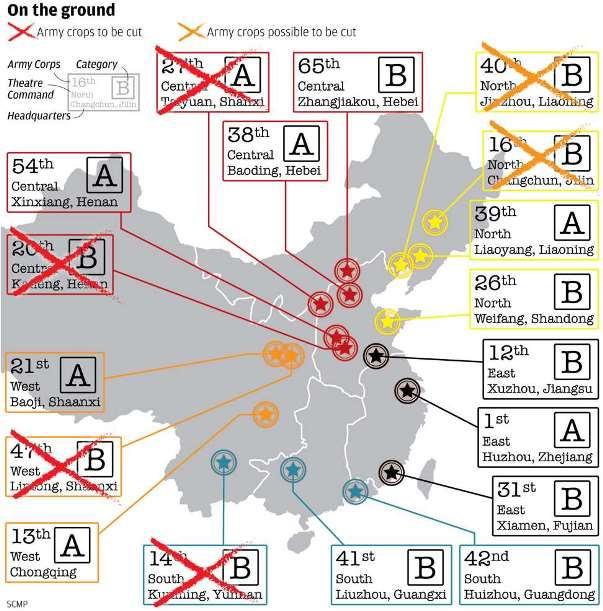

2017-03-31 20:54:00
有一年沒寫共軍小道消息，錯過的新聞太多了，這裡只能挑重要的說。我整個2016年沒有做筆記，現在凴記憶來寫，如果遺漏了什麼細節，請指正。
中共海軍的擴充速度仍然高於空軍，各式各樣最新型的艦艇基本上都處於下餃子的狀態。 071A型兩棲艦果然一訂就是三艘；903型補給艦也又建了三艘（共六艘）；新的072A登陸艦持續出現；901型遠洋補給艦的第二艘已經上了船臺，不過我原本説的55000噸排水量似乎是高估了些，新的照片顯示它與美軍最新的Supply Class噸位相似，所以大概是40000+噸級的。 075級兩棲艦的開工典禮，剛在本月稍早於滬東造船厰舉行，新任海軍司令沈金龍到場主持，不過上船臺顯然是明年下半的事。這是40000噸級的小平頂（LHD，參見前文《中共海軍的兩棲攻撃艦》），能夠一次投送一個加強營和配套的空中火力支援（Close Air Support，由武裝直升機提供，空優還是要靠真的航母），在臺海和南海都算是殺鷄的牛刀，主要是未來干涉參與中東和非洲事務的手段。與071和075配套的726型氣墊船，早在十年前就建了三艘，然後忽然停建了，可能是仿製烏克蘭產的渦輪發動機遭遇了瓶頸。最近終於開始量產（已確認新生產三艘），應該是發動機的問題解決了。至於更大的Zubr氣墊船，由中方組裝的三號和四號艦正分別在海試和裝配中，何時能夠自力量產還很難説。
055級大驅果然是2016年中上了船臺，目前確認的至少有兩艘（一說四艘）。我以前説的第一批八艘訂單，已經在過去兩年內被多方面消息來源證實，最近有謠言說還有追加的訂單。這其實並非不合理：052D在井噴13艘之後，可能已經接近尾聲（但也有傳説總訂單是18艘；我個人覺得13艘夠了）。 052系列的裝備再怎麼改進，終究是艘6000噸級的小船，持續力有限，只能在西太平洋轉一轉。中共海軍的建軍重點，現在已經達到全球部署、遠洋巡弋的階段，所以每個航母戰鬥群的防空任務，可能會由四艘055級擔任，而不是我以前估計的兩艘055加兩艘052D 混合編組。當然如此一來，共軍航母戰鬥群的水面護衛力量，就比美軍還要豪華了。不過即使052系列專職近海防禦，20多艘仍有不足，將來還是必須續建。 055級除了噸位大了一倍， C4ISR也比052D又先進了一代，所以換上新電子系統的052E應該是下一步，可是目前還沒有任何確實的消息。
054A反潛護衛艦的建造似乎也已接近尾聲，縂數應該是30艘左右。中共海軍的反潛護衛艦缺口，比防空驅逐艦還要大，所以054B必然是即將開建。過去兩個月，在中東和馬來西亞的防務展，都出現了中方的新外銷型反潛護衛艦模型。從這些模型來研判，054B將會採用與055級同代的綜合天綫主桅。換句話説，從052D到055，升級了電子系統；到054B，又升級了動力系統。這的確符合共軍發展新技術時，小步快跑、一步一個腳印的傳統。
001A級017號航母至今仍然在大連的船塢裡，看來下水要等到下個月了。我原本猜測去年第二季就會下水，這個錯誤除了源自我對造船常識的欠缺之外，也有大連船廠的選擇這個因素。過去幾個月的施工主要在於內部的裝修，尤其是鋪設電纜。這是從完成60%全部工量前進到70%的過程，一般可以在船塢裡進行，也可以先下水然後在碼頭上做；顯然大連船廠並不急著把船塢空出來。當前國際船運業和造船業正承受著等同2007年金融危機後的極度不景氣，訂單一票難求，所以也難怪017號還賴在船塢裡。
至於配備了彈射器的002級018號航母，據稱早已在2016年第二季開工（一説第三或第四季；確認時間點有困難，因為習近平這次沒有出席開工典禮，所以也有可能尚未開工）。依照017號的前例來推算，應該明年中在江南造船廠進船塢，2020年下水。 J15的彈射型也已在幾週前彈射首飛成功。最近有很多消息指出共軍電磁彈射器的研發進度超前，但是002級的設計應該在2015年之前就已定型，所以我對018號會裝配電磁彈射器的謠言不予採信。如果改變原來002級建兩艘的計劃，在明年底（或後年初）開工的019號上改裝電磁彈射器，倒還是有可能的。
在空軍方面，Y20運輸機在去年開始服役，J20也在去年底提前進度進入中共空軍序列，優先裝備給負責編寫教程的試飛部隊。最近有很多謠言說成飛公司開了三條生產綫，能每年量產50+架云云，我覺得這實在太低估了現代尖端武器在製造上的難處。超級大本營在近年退步得很明顯而嚴重，尤其是它的空軍版，受幾個不入流的版主影響，基本上已經純粹淪為傻蛋們胡扯的論壇，前面所提的這個謠言似乎也是在那裡發酵醖釀出來的。我個人覺得今明兩年能各生產一個團24架就不錯了。
向俄國訂製的SU35，也是從去年底開始交付南部戰區使用。我在兩年前曾討論過SU35 對中共空軍的意義，在於新的內部承力結構設計和數位電傳飛控系統，它的航電反倒還不如共軍既有的技術，所以那時不知共軍會不會要求俄國製造商整合中國製的航電。現在實機已經交付，結果發現用的是原裝航電，連儀表顯示都還是俄文的。這是有點可惜的事，因為如此一來，中方追加訂單的可能性就比較小了，也就是要等到渖飛完成仿製才能繼續裝備這個等級的重型空優機。但是渖飛這個扶不起的阿斗試圖仿製SU30快20年了，到現在J16還在修修補補，SU35的渖飛版只怕又是一個難產的怪胎。
H20這個傳説中的新一代轟炸機，在去年底被官方證實存在。雖然沒有任何可靠的細節消息，連型號都是軍迷們自己猜的，但是從謠言和航展裡的蛛絲馬跡來判斷，共軍似乎已經決定採用亞音速隱身設計，而不是較為容易設計製造的超音速非隱身版本。這其實是合理的，因為高速已經失去了突破現代防空系統的能力，只有真正的隱身轟炸機，才具有遠遠超越現役H6的能力和價值。目前還不能確定的，是H20 會採用類似美軍B2和B21的全飛翼設計，或者是類似X-47B這樣的半飛翼設計；前者對米波的隱身性能更好，但是後者的飛控較為穩定。
在去年底的珠海航展上，中方的各式無人機、飛彈、雷達等等，百花齊放，令人目不暇給。這是中國軍工的技術能力基本趕上世界先進水準（也就是美國）的體現，尤其是AESA和光電傳感器被白菜化了，使得拼裝高性能武器的技術門欄幾乎完全消失，於是一些名不見經傳的新公司忽然也來參展，價錢比國外低了一個數量級。我個人覺得至今中國仍然明顯落後於美國的重要軍工技術，只有三項：渦輪發動機、核子動力發動機和碳纖維自動鋪設機。渦輪發動機制約了軍機和水面艦艇的動力系統，尤其對J20的掣肘最為嚴重，等同F119的WS15只怕要到2020年才能完成實用化，屆時裝配了F119的F22已經服役到第15年了。核子動力則應用在航母和潛艇上，航母沿用傳統動力還沒有嚴重的性能損失，常規潛艇則根本不能和核潛艇比。可能在2020年下水的095級仍然會遜於Virginia Class，所以在這方面共軍落後了不止15年。至於碳纖維，日本擁有最先進的纖維生產技術，但是鋪設方面則是由美國遙遙領先。鋪設大型碳纖維複合部件是美國的獨門絕技，中方如果不設法趕上，則在軍用和民用的大飛機製造上將永遠落後。
最後談談去年底，遼寧艦前赴南海訓練一事。有點常識的人應該知道遼寧艦做為共軍的第一艘航母，本來就具有實驗探索這個重要任務，所以每當艦載機部隊的操作上了一個新的層次，最後的驗收都必須到遠洋實踐。 2013年底到南海，是為了檢驗多架次起飛降落。 2016年底，則已經到了多架次實彈射擊的這一步，所以先到西太平洋是為了實彈演習，到南海則是為了與南海艦隊練習編隊協作。既然經過海峽只是航渡，那麼自然是以巡航速度通過，而且不須起降戰機。司令吳勝利在職已有10年，即將過72嵗生日，這次親自壓陣，顯然是在他屆齡退休前藉此順便歡送他。臺灣媒體胡扯連篇，以為一切舉動都是針對臺灣的反應，難道當天太陽繞行了臺灣一圈，也是針對臺灣什麼事而來？事實上，臺灣民進黨搞的那些蠢事，對中共來說，還不如書房墻上的一隻螞蟻對我的威脅大。如果我起身上茅房經過墻邊，那隻螞蟻開始猜測我的行動是如何如何針對它而來，豈不讓有識者恥笑？
【後註一】我在前文《共軍小道消息刷新（2015年第四季）》曾提到中共軍改預計裁軍30萬，但是陸軍被裁應該遠超這個數字，以彌補海空軍的增額。最近有傳言指出現有的18個集團軍應該會被裁掉6個，下面是前幾天出現的一張示意圖。最新的消息確認第40集團軍在裁撤之列，現在主要是第16集團軍的命運還未確定，也有較小的可能是第12集團軍被裁。 （畫這張圖的人，英文很菜，“crop”應該是“corp”才對。）
【後註二】2017年四月底的消息是第16集團軍的確被保留了，整個中共陸軍已由早先的18個軍縮編為13個。出人意外的是番號也全部重新安排，由東部戰區開始，順時針地依東南西北中的順序從71排到83，亦即71（12），72（1），73（31），74（41），75（42），76（21），77（13），78（16），79（39），80（26），81（65），82（38），83（54）。目前我還不知道空軍的第15集團軍是否也改了番號。海軍的航母戰鬥群則已經確認是等同集團軍的軍級單位。
【後註三】今天是2017年五月3日。新消息證實15軍番號也撤銷了，今後改為有點兒繞口的“空軍空降兵軍”。統一撤銷這些舊番號，應該是為了避免被裁撤的部隊老幹部抱怨不公平。例如第27軍，不但戰功顯赫，而且還是甲種集團軍，被裁必然有人憤憤不平。
【後註四，2022/09/03】今天偶然注意到這個視頻（參見《My Best LIGHTSABER Yet! (STRONTIUM PLASMA 4500°)》），想起五年多前聊過，我猜測Lucas的Lightsaber設計靈感可能來自Plasma Cutter，現在果然有人動手驗證。